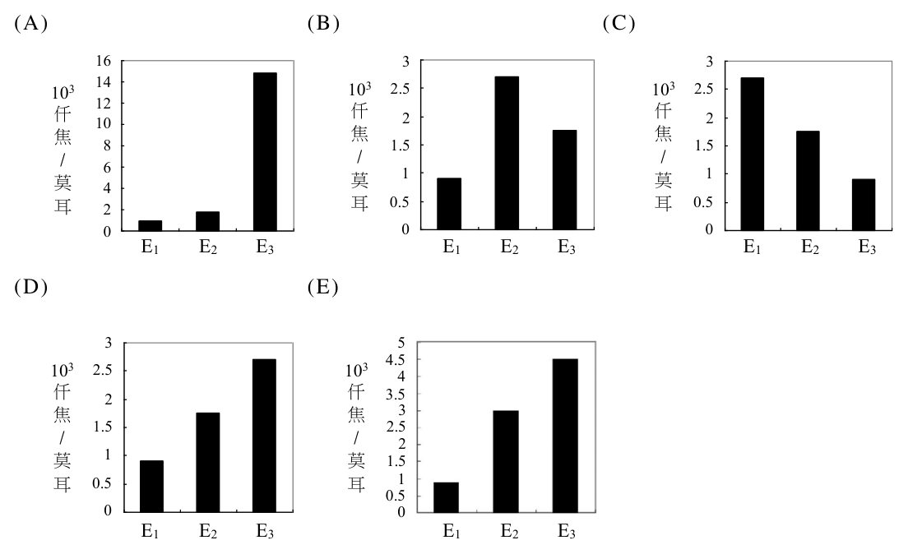
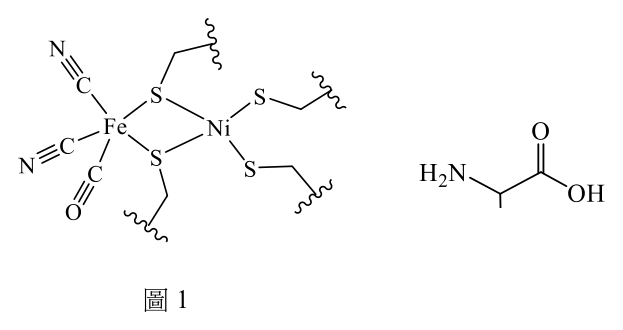
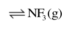
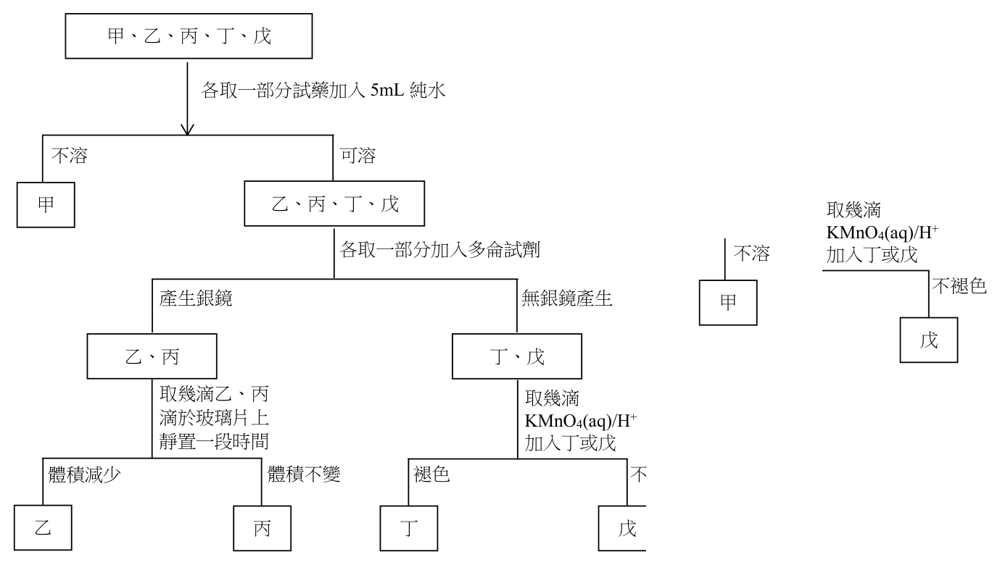
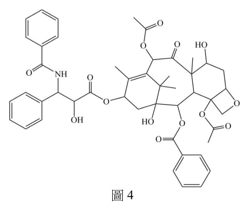
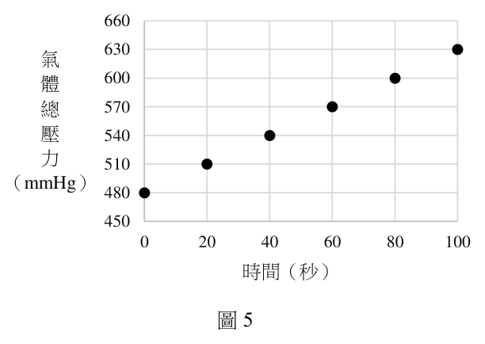
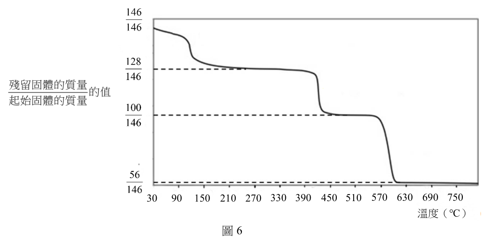
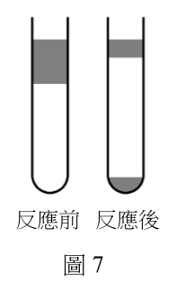
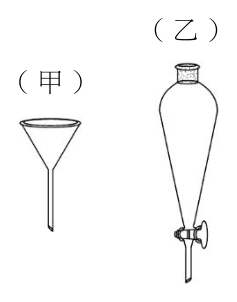

開卷有益 ／
分科測驗 ／ 化學 ／ 113 年113 年分科測驗化學試題與答案
這一頁是民國 113 年分科測驗化學的整份歷屆試題，共 27 題，題目與標準答案出自大考中心 分科測驗歷年試題（依著作權法 §9，考試試題不受著作權保護），其中 27 題附有詳解。以下逐題列出題幹、選項與答案；要計時作答或記錄成績，請用線上練習。
大學入學考試中心原始場次代碼：分科化學
線上作答這一科 →
全部 27 題
第 1 題
元素(94X )的第一游離能為 E1 ,第二游離能為 E 2 ,第三游離能為 E 3 。將 E1 、 E 2
及 E 3 的數值大小以柱狀圖表示並繪製如下,則下列何者正確?

本題選項為上圖中的 A／B／C／D，請對照圖片作答。
答案：（A）
詳解與考點 正解：原子序 94 的元素為 Pu，其電子組態可寫為 [Rn]5f6 7s2。連續移走電子後，離子正電荷增加，對剩餘電子的吸引增強，所以 E1<E2<E3；前兩次主要移去 7s 電子，第三次才涉及 5f 電子，仍不是移入惰性氣體內層的巨大跳躍。符合這一相對關係的（A）柱狀圖為正確選項，故選 A。
B：連續游離同一原子的電子時，後一次游離所需能量不應低於前一次；把 E2 或 E3 排在前一游離能之下，不符合離子電荷逐步增加的趨勢。
C：7s2 不表示 Pu 只有兩個可移除的價電子；5f 電子仍屬價層，因此不能在第三游離能前後套用移去內層電子的極大跳躍。
D：三次游離能要在相同能量單位下依序比較，不能把座標刻度不同造成的視覺高度當成能量次序。
E：E1、E2、E3 的下標代表第幾次游離，不是三種彼此獨立的元素性質；判讀時須維持同一原子的連續移電子順序。
本題考點：連續游離能（successive ionization energies）——每移去一個電子，離子對下一電子的吸引通常增強，故依序上升；電子組態（electron configuration）——判斷游離能是否出現大跳躍時，要看下一個電子是否已由價層轉為內層；能量圖表判讀（energy graph interpretation）——先比較同一座標尺度下的相對高低，再連回電子移除的次序。
第 2 題
下列有關 N 2 、 N 2 H 2 及 N 2 H 4 三種分子組成與結構的敘述,何者正確?
（A） 孤對電子數: N 2 > N 2 H 2 > N 2 H 4（B） 鍵結電子對的總數: N 2 > N 2 H 2 > N 2 H 4（C） N − N 鍵長的大小: N 2 > N 2 H 2 > N 2 H 4（D） N 2 H 4 中N−N−H的鍵角為120°（E） N 2 H 2 為一平面分子答案：（E）
詳解與考點 正解：N2H2的兩個氮原子以N=N雙鍵相連，每個氮周圍有三個電子域，採近似sp2的平面排列；要維持π鍵的p軌域側向重疊，整個分子可視為平面分子。因此E正確，故選 E。
A：N2、N2H2、N2H4的每個氮原子各有一對孤電子對，三種分子的孤對電子數並非遞減。
B：鍵結電子對總數依序為N2的3對、N2H2的4對、N2H4的5對，方向應為遞增。
C：N−N鍵級由三鍵、雙鍵到單鍵遞減，鍵長則由短到長，並非選項所列次序。
D：N2H4中每個N為三角錐形，N−N−H鍵角接近四面體角，但會受孤電子對與取代基影響，並非120°。
本題考點：路易斯結構（Lewis structure）——先數鍵結對與孤電子對，才能比較電子域；鍵級與鍵長（bond order and bond length）——鍵級越高通常鍵長越短；分子幾何（molecular geometry）——雙鍵氮周圍常呈平面構型，單鍵胺類則近似四面體電子域。
第 3 題
下列有關酸鹼滴定的敘述,何者正確?
(甲)讀取滴定管內溶液的體積時,視線應與液面的最低處對齊
(乙)將滴定溶液填入乾淨滴定管前,先以滴定溶液潤洗滴定管
(丙)以NaOH溶液滴定未知酸溶液時,可直接使用剛配製好的NaOH溶液進行
滴定,直接得知此未知酸的濃度
(丁)滴定進行時,須不斷搖動錐形瓶使酸鹼溶液充分混合,一旦指示劑開始
變色,即可停止滴定,並讀出數值
（A） (甲)(乙)（B） (乙)(丙)（C） (甲)(丙)（D） (甲)(丁)（E） (丙)(丁)答案：（A）
詳解與考點 正解：酸鹼滴定的量測準確度取決於正確讀值與避免滴定液被稀釋。（甲）讀滴定管時，視線要與凹液面最低處同高；（乙）裝入滴定液前先用該滴定液潤洗滴定管，可排除殘留水分的影響。因此只有（甲）（乙）正確，故選 A。
B：（乙）正確，但（丙）錯誤。NaOH 溶液剛配製後濃度未必已準確標定，且容易受空氣中的 CO2 影響，不能直接作為未知酸濃度的可靠依據。
C：（甲）正確，但（丙）錯誤；是否讀對液面不能補足滴定液濃度尚未標定的問題。
D：（甲）正確，但（丁）錯誤。指示劑初次變色可能只是局部顏色，須搖勻後觀察顏色是否持續，才是終點判斷。
E：（丙）與（丁）都錯誤，分別忽略滴定液標定與終點顏色需持續的條件。
本題考點：滴定管讀值（burette reading）——透明溶液要以視線對齊凹液面最低處，避免視差；滴定液標定（standardization）——濃度易變或未知的滴定液須先標定；滴定終點（titration endpoint）——顏色改變經充分混合後能持續，才可停止滴定。
陳同學依據下述三步驟,對某湖水樣進行溶氧量分析:
I. 量取97.0 mL水樣,置於一100 mL容量瓶中,加入1.0 mL硫酸亞錳( MnSO4 ⋅ 2H2 O ) 以及1.0 mL鹼性碘化鈉後,激烈搖晃,使瓶內溶液混合均勻,此時溶液中
產生 MnO2 沉澱。
II. 待沉澱不再增加後,隨即加入1.0 mL濃硫酸,並以蒸餾水稀釋至刻度。
III. 從容量瓶中取出10.0 mL溶液,隨即以0.015 M硫代硫酸鈉溶液( Na 2S2 O3 ) 滴定。當滴定到達終點時,共耗去0.52 mL硫代硫酸鈉溶液。
第 4 題
根據下列反應,一莫耳的氧氣可消耗多少莫耳硫代硫酸鈉?
Mn 2 + + 2 OH − ˉ→ Mn(OH) 2
2 Mn(OH) 2 + O2 → 2 MnO2 + 2 H2 O
MnO2 + 2 I − ˉ+ 4 H + → Mn 2+ + I 2 + 2 H 2 O
I 2 + 2 S2 O3 2 − ˉ→ 2 I − ˉ+ S4 O6 2 − ˉ
（A） 6（B） 5（C） 4（D） 3（E） 2答案：（C）
詳解與考點 正解：以 1 mol O2 為起點，反應 2Mn(OH)2+O2→2MnO2 先生成 2 mol MnO2；每 1 mol MnO2 在酸性碘離子中生成 1 mol I2，所以共有 2 mol I2；每 1 mol I2 又消耗 2 mol S2O3^2−，總共消耗 4 mol S2O3^2−。故選 C。
A：6 mol 把反應鏈中的係數額外放大，與 1→2→2→4 的逐步關係不符。
B：5 mol 不可能由各步的整數化學計量關係得到。
D：3 mol 漏掉了 I2 每 1 mol 需 2 mol S2O3^2− 的滴定係數。
E：2 mol 只算到 2 mol I2，尚未把碘與硫代硫酸根的 1:2 關係納入。
本題考點：氧化還原滴定（redox titration）——將分析物的氧化還原反應逐段連成莫耳比；計量係數（stoichiometric coefficient）——每一式的係數都要沿反應鏈相乘；碘量法（iodometry）——I2 與 S2O3^2− 的 1:2 關係是終點換算的核心。
第 5 題
下列哪一數值最接近水樣中的溶氧量(單位:M)?( 0.015 × 0.52 = 7.8 × 10 ˉ)−3
（A） 1.0 × 10 ˉ−4（B） 2.0 × 10 ˉ−4（C） 4.0 × 10 ˉ−4（D） 6.0 × 10 ˉ−4（E） 8.0 × 10 ˉ−4答案：（B）
詳解與考點 正解：10.0 mL 取樣所耗硫代硫酸鈉為 n(S2O3^2−)=0.015 mol/L×0.00052 L=7.8×10^-6 mol。依此分析反應鏈，n(O2)=7.8×10^-6/4=1.95×10^-6 mol。容量瓶內共 100 mL，故原 97.0 mL 水樣中的 O2 為 1.95×10^-6×10=1.95×10^-5 mol；濃度為 c(O2)=1.95×10^-5 mol/0.0970 L=2.0×10^-4 M，故選 B。
A：1.0×10^-4 M 是正解的一半，沒有同時保留 O2 與 S2O3^2− 的 1:4 關係及容量瓶放大倍數。
C：4.0×10^-4 M 是正解的兩倍，將滴定莫耳數換成氧氣莫耳數時少除了一次必要係數。
D：6.0×10^-4 M 與固定的滴定量、取樣體積及反應莫耳比不能相容。
E：8.0×10^-4 M 是正解的四倍，等同把硫代硫酸根的莫耳數直接當成氧氣莫耳數。
本題考點：滴定莫耳數（titration moles）——先用濃度乘滴定體積求 n(S2O3^2−)；反應莫耳比（stoichiometric ratio）——以 O2:S2O3^2−=1:4 把滴定物換回分析物；稀釋回推（dilution back-calculation）——10.0 mL 取樣代表 100 mL 容量瓶的十分之一，最後仍要除以原水樣 97.0 mL。
第 6 題
25°C時,甲、乙、丙三種物質溶於水的性質,如表1 所示:
表1
性質
溶解度 溶液的pH 物質
甲 可溶 小於7.0
乙 難溶 大於7.0
丙 可溶 大約為7.0
根據表中的敘述,甲、乙、丙分別可能是下列哪些物質?
物質
甲 乙 丙
選項
物質 選項 甲 乙 丙 (A) C H COOH 6 5 Ca(OH) 2 Na CO 2 3 (B) CH COOH 3 NaHCO 3 Na SO 2 4 (C) AgCl KCl CaCl 2 (D) MgCl 2 MgSO 4 NaOH (E) CH COOH 3 Mg(OH) 2 NaCl
（A） C6 H5 COOH Ca(OH) 2 Na 2 CO3（B） CH3COOH NaHCO3 Na 2SO4（C） AgCl KCl CaCl 2（D） MgCl 2 MgSO4 NaOH（E） CH3COOH Mg(OH) 2 NaCl答案：（E）
詳解與考點 正解：甲須為可溶且酸性的物質，乙須為難溶且鹼性，丙則為可溶且近中性。醋酸 CH3COOH 可溶於水並呈酸性；Mg(OH)2 難溶，但其溶解部分提供 OH− 而呈鹼性；NaCl 可溶，且強酸強鹼鹽的水溶液近中性。因此 E 同時符合三項條件，故選 E。
A：苯甲酸的水溶性不符合甲的「可溶」，且 Na2CO3 水溶液呈鹼性，不是近中性。
B：CH3COOH 符合甲，Na2SO4 也可近中性，但 NaHCO3 可溶於水，與乙的「難溶」不符。
C：AgCl 難溶卻不會形成甲所需的酸性可溶溶液，KCl 也不是難溶鹼性物質。
D：MgSO4 不是難溶鹼，NaOH 的水溶液明顯呈鹼性，不能作為近中性的丙。
本題考點：酸鹼鹽性（acid-base properties）——先辨認酸、鹼及鹽在水中的主要離子；溶解度（solubility）——「難溶」與「水溶液呈酸鹼性」是兩個須同時檢查的條件；鹽類水解（salt hydrolysis）——強酸強鹼形成的鹽通常近中性，弱酸或弱鹼相關鹽則可能改變 pH。
第 7 題
某蛋白質中鐵元素的重量百分比為0.33%,將此蛋白質0.20 克溶於水中配成
10.0 毫升的溶液,此溶液在25°C下的滲透壓為5.5 torr。每莫耳的此蛋白質含有
20 × 82 × 298 × 760 7 多少莫耳的鐵原子?(已知1atm=760 torr、 = 6.75 × 10 、
5.5
Fe 的原子量=56.0)
（A） 5（B） 4（C） 3（D） 2（E） 1
二、多選題(占48分)答案：（B）
詳解與考點 正解：先由滲透壓求蛋白質莫耳數。p=5.5 torr×1 atm/760 torr=7.24×10^-3 atm，V=10.0 mL=0.0100 L，所以 n(蛋白質)=pV/(RT)=7.24×10^-3×0.0100/(0.082×298)=2.96×10^-6 mol。其莫耳質量為 0.20 g/(2.96×10^-6 mol)=6.75×10^4 g/mol。樣品中鐵的質量為 0.20 g×0.0033=6.6×10^-4 g，n(Fe)=6.6×10^-4 g/56.0 g/mol=1.18×10^-5 mol，故每莫耳蛋白質含 n(Fe)/n(蛋白質)=3.98≈4 mol，故選 B。
A：若每莫耳蛋白質含 5 mol Fe，鐵的質量百分比約為 5×56.0/(6.75×10^4)=0.41%，高於題給 0.33%。
C：3 mol Fe 對應的鐵質量百分比約為 0.25%，低於題給值。
D：2 mol Fe 對應約 0.17%，與題給 0.33% 不符。
E：1 mol Fe 對應約 0.083%，明顯低於題給值。
本題考點：滲透壓（osmotic pressure）——非電解質可用 pV=nRT 由壓力、體積求溶質莫耳數；莫耳質量（molar mass）——以樣品質量除莫耳數求得；組成換算（composition calculation）——將元素質量百分比轉為元素莫耳數後，再除以大分子莫耳數。
第 8 題 （多選）
在20°C時,氯化鈣、氯化鉀及草酸鉀在100.0 克水中的溶解度分別為74.5、34.2
及30.0 克。草酸鈣的莫耳溶解度為 4.8 × 10 ˉ−5 M 。根據上述的數據,下列敘述哪些
正確?(草酸鈣的莫耳質量為128 g/mol)
（A） 草酸鈣的溶解度約為 6.1 × 10 ˉ克/100.0克水−4（B） 草酸鈣的 K sp 為 2.3 × 10 ˉ−9（C） 100.0克的水不能同時完全溶解34.2克氯化鉀和74.5克氯化鈣（D） 將3克氯化鈣粉末置入130.0克草酸鉀飽和水溶液中,充分攪拌後,無沉澱產生（E） 於134.2克的氯化鉀飽和水溶液中加入1.0克草酸鉀。經充分攪拌後,溶液內
仍有固體存在。這些固體是未能溶解的草酸鉀答案：（A）（B）（C）
詳解與考點 正解：草酸鈣的莫耳溶解度 s=4.8×10^-5 M。100.0 g 水約為 0.100 L，m=sV×128=6.1×10^-4 g，支持 A；CaC2O4⇌Ca2++C2O4^2−，Ksp=s^2=2.3×10^-9，支持 B。KCl 與 CaCl2 共享 Cl−，共同離子效應使兩者不能同時各達純水中的最大溶解量，支持 C。故選 ABC。
A：依莫耳溶解度換成 100.0 g 水中的質量，約為 6.1×10^-4 g。
B：草酸鈣解離後兩種離子的平衡濃度均為 s，因此 Ksp=s×s。
C：兩鹽同時存在時的 Cl− 濃度升高會抑制含 Cl− 鹽的溶解，不能把各自的純水溶解度直接相加。
D：飽和草酸鉀溶液已有足量草酸根；加入 CaCl2 會形成 Ksp 很小的草酸鈣沉澱。
E：134.2 g 氯化鉀飽和溶液含約 100.0 g 水，1.0 g 草酸鉀小於其 30.0 g 溶解度，且無 Ca2+，不會留下固體。
本題考點：莫耳溶解度（molar solubility）——用 sV 求莫耳數，再換成質量；溶度積（solubility product）——1:1 難溶鹽可由 s^2 求 Ksp；共同離子效應（common-ion effect）——共同離子升高會降低鹽的溶解傾向。
第 9 題 （多選）
已知下列三個反應式與其反應熱如下:
2 N2 (g) + 6 H2 (g) → 4 NH3 (g) ΔH1
2 N2 (g) + 6 H2 (g) + 7 O2 (g) → 4 NO2 (g) + 6 H2 O(g) ΔH 2
4 NH3 (g) + 7 O2 (g) → 4 NO2 (g) + 6 H2 O(g) ΔH3
則下列關係式中,哪些正確?
（A） ΔH2 = ΔH1 + ΔH3（B） ΔH2 = ΔH1 − ΔH3（C） ΔH1 = [ NH3 (g)的莫耳生成熱] × 4（D） ΔH2 = [ NO2 (g)的莫耳生成熱] × 4（E） ΔH3 = [ NO2 (g)的莫耳生成熱] × 4 +[ H 2 O(g)的莫耳生成熱] × 6
-[ NH3 (g)的莫耳生成熱] × 4答案：（A）（C）（E）
詳解與考點 正解：將反應一的 4NH3 直接接到反應三的反應物端，相加後 NH3 消去，恰得到反應二，因此 ΔH2=ΔH1+ΔH3。反應一由元素態 N2、H2 生成 4 mol NH3，故 ΔH1=4×NH3(g) 的莫耳生成熱；反應三則依生成熱總和減反應物生成熱計算。故選 ACE。
A：依赫斯定律將反應一與反應三相加，反應熱也相加，得到 ΔH2=ΔH1+ΔH3。
C：N2(g) 與 H2(g) 是元素標準態，生成熱為 0，因此反應一的反應熱只剩 4 mol NH3 的生成熱。
E：ΔH3=4×NO2(g) 的莫耳生成熱+6×H2O(g) 的莫耳生成熱-4×NH3(g) 的莫耳生成熱。
B：反應式相加時反應熱同向相加，不是以 ΔH1 減去 ΔH3。
D：反應二的產物除了 NO2 還有 H2O，不能只以 4 mol NO2 的生成熱表示。
本題考點：赫斯定律（Hess's law）——目標反應由哪些反應式相加得到，反應熱就依相同方式相加；標準生成熱（standard enthalpy of formation）——元素在標準態的生成熱定為 0；反應熱計算（reaction enthalpy）——產物生成熱總和減去反應物生成熱總和。
第 10 題 （多選）
某未知結構的有機化合物甲,其分子式為 C4 H8 O2 。下列有關甲的敘述,哪些正確?
（A） 若甲為羧酸,則甲可能為2-甲基丙酸（B） 若甲為二醇類,則可能有順反異構物（C） 若甲為酯類,則甲可能為乙酸丙酯（D） 若甲含有環結構,則甲可能有四員環結構（E） 若甲含有羥基,則甲不可能同時含有羰基(C=O)答案：（A）（B）（D）
詳解與考點 正解：先由分子式 C4H8O2 計算不飽和度：(2×4+2−8)/2=1，氧原子不影響此值，所以結構只能在雙鍵、環或羰基等安排中具有一個不飽和度。（A）、（B）、（D）都能配合碳、氫、氧的總數與此限制，故選 ABD。
A：2-甲基丙酸含 4 個碳、8 個氫與 2 個氧，羧基的 C=O 提供一個不飽和度，符合 C4H8O2。
B：例如 HOCH2CH=CHCH2OH 為二醇且有 C=C；雙鍵兩端各連接不同取代基，可能形成順反異構物。
D：環丁烷二醇可具有四員環，環結構本身提供一個不飽和度，分子式仍可為 C4H8O2。
C：乙酸丙酯的分子式是 C5H10O2，比甲多 1 個碳與 2 個氫，不符合題設分子式。
E：羧酸同時含有羥基與羰基，例如（A）2-甲基丙酸就是反例；有羥基不表示不能有 C=O。
本題考點：不飽和度（degree of unsaturation）——由 C、H、鹵素與 N 的數目先算出環與多重鍵總數，再篩選結構；順反異構（cis-trans isomerism）——雙鍵兩端各有兩種不同取代基時，才可能形成幾何異構；官能基（functional group）——判斷共存與否時，要看實際官能基結構，不能只依名稱排除。
第 11 題 （多選）
圖1 為一種細菌的氫化酶活性中心的結構,除含有一般配位基外,另以4 個
半胱胺酸的硫與金屬離子配位。圖2 為半胱胺酸的結構。下列關於圖1 與圖2
內容的敘述,哪些正確?
圖1 圖2

（A） 鎳離子的配位數為4（B） 鐵離子的配位數為6（C） 在鐵離子上有兩個配位基為CN-（D） 半胱胺酸具有醯胺鍵,為一種蛋白質（E） 半胱胺酸的硫原子有多對孤對電子,可以同時配位在兩金屬上答案：（A）（C）（E）
詳解與考點 正解：共同判準是以直接鍵結到金屬的配位原子數判定配位數，並以配位基可提供的孤對電子判斷是否能配位。鎳為4配位，鐵上有兩個 CN− 配位基，而半胱胺酸的硫可用孤對電子橋接金屬中心，所以選 A、C、E。
A：鎳離子周圍直接配位的原子共有4個，故其配位數為4。
C：CN− 是以碳端孤對電子配位的配位基；鐵離子上有兩個 CN−，符合題圖所示的配位組成。
E：半胱胺酸的硫原子帶有可供配位的孤對電子；同一硫可作橋接配位基，連接兩個金屬中心。
B：鐵的配位數必須把所有直接配位原子都算入，並非6。分辨關鍵在配位原子數，不是只把氰根或硫原子擇一計數。
D：半胱胺酸是胺基酸，具有胺基、羧基與硫醇基；單一半胱胺酸分子沒有醯胺鍵，也不是蛋白質。
本題考點：配位數（coordination number）——只數與中心金屬直接形成配位鍵的供體原子；橋接配位基（bridging ligand）——同一供體原子可同時連結兩個金屬中心，判讀時不可只當成單一金屬的專屬配位基；胺基酸與蛋白質（amino acid and protein）——胺基酸聚合形成胜肽鍵後才構成蛋白質。
第 12 題 （多選）
在25°C下,將1.0 M 的醋酸稀釋至0.1 M,則下列哪些數值會增加?
( CH3COOH的解離常數為 Ka )
（A） pH（B） [OH − ]（C） [ CH 3 COO − ]
[CH 3 COO − ]（D） Ka（E） [CH 3 COOH]答案：（A）（B）（E）
詳解與考點 正解：稀釋只改變濃度，不改變 25°C 下的 Ka 與 Kw。弱酸近似給 [H+]≈√(KaC)，所以 pH 與 [OH−] 增加；未解離的 [CH3COOH] 則隨稀釋降低。若（C）是共軛鹼與未解離酸的濃度比，該比值會隨稀釋增加；（E）若確為 [CH3COOH]，則不會增加。官方答案為 ABE；惟可辨識的 E 與化學判準不符，答案鍵與選項內容存在矛盾。
A：稀釋使 [H+] 降低，所以 pH=−log[H+] 增加。
B：在 25°C，Kw=[H+][OH−] 固定；[H+] 降低時，[OH−] 會增加。
E：若選項表示 [CH3COOH]，稀釋後其平衡濃度會降低，不能判為增加。
C：若選項表示 [CH3COO−]/[CH3COOH]，由 Ka=[H+][CH3COO−]/[CH3COOH] 可知 [CH3COO−]/[CH3COOH]=Ka/[H+]；稀釋使 [H+] 降低時，此比值增加。
D：Ka 是 25°C 下醋酸的解離常數，溫度不變時不因稀釋而改變。
本題考點：弱酸解離平衡（weak-acid dissociation equilibrium）——濃度改變時，以 Ka 與質量守恆判斷 [H+]、共軛鹼及未解離酸；水的離子積（ionic product of water）——溫度固定時 [H+][OH−] 固定，兩者反向變化；酸解離常數（acid dissociation constant）——Ka 由溫度與物質本性決定，不因稀釋改變。
第 13 題 （多選）
若將 N 2、 2F 及 NF3 裝入一0.656 升的密閉容器中,再藉由加熱使其進行下列反應:
N2 (g) + F2 (g) NF3 (g) (反應式未平衡)
已知在527°C反應達平衡時,容器內各氣體的分壓分別為
PN 2 = 0.040 atm , PNF3 = 0.700 atm , 2FP = 0.060 atm
7 2 −2
若三者皆符合理想氣體性質,則下列相關敘述,哪些正確?( 3 = 5.67 × 10 ) 4 × 6

（A） 平衡反應式之最簡整係數總和為6（B） 密閉容器內的氣體總壓力為0.80 atm（C） 密閉容器內 N 2 的莫耳數為 6.1 × 10 ˉ莫耳−4（D） 此反應 K p 的數值為 5.67 × 10 2（E） 此反應 Kc 的數值大於 K p答案：（A）（B）（E）
詳解與考點 正解：先將反應配平為 N2(g)+3F2(g)⇌2NF3(g)，係數總和為 6；平衡時總壓為 0.040+0.700+0.060=0.800 atm。此反應的氣體莫耳數變化 Δn=2-4=-2，所以 Kp=Kc(RT)^-2，因 RT>1，Kc>Kp。三項判準分別支持 A、B、E，故選 ABE。
A：配平後係數為 1、3、2，最簡整係數總和為 6。
B：密閉容器中各氣體分壓可直接相加，總壓為 0.800 atm。
E：由 Kp=Kc(RT)^-2 可知 Kc=Kp(RT)^2，因此 Kc 大於 Kp。
C：N2 的莫耳數為 n=PV/(RT)=0.040×0.656/(0.082×800)=4.0×10^-4 mol，不是 6.1×10^-4 mol。
D：Kp=PNF3^2/(PN2×PF2^3)=0.700^2/(0.040×0.060^3)=5.67×10^4，與選項所列數值不符。
本題考點：化學平衡配平（chemical-equation balancing）——先取得正確係數，才能判斷反應商與氣體莫耳數變化；分壓（partial pressure）——理想氣體混合物的總壓為各成分分壓之和；Kp 與 Kc（pressure and concentration equilibrium constants）——用 Kp=Kc(RT)^Δn 判斷兩者大小。
第 14 題 （多選）
實驗室中有甲、乙、丙、丁、戊五瓶試藥,已知可能是葡萄糖、乙醇、乙醛、
丙酮、正己烷。李同學想利用高中化學所學,來區分此五種試藥,並在黃老師的
指導下,設計下列實驗流程(圖3)。根據此流程,則下列哪些敘述正確?
甲、乙、丙、丁、戊
各取一部分試藥加入5mL 純水
不溶 可溶
甲 乙、丙、丁、戊
各取一部分加入多侖試劑
產生銀鏡 無銀鏡產生
乙、丙 丁、戊
取幾滴乙、丙 取幾滴
滴於玻璃片上 KMnO4(aq)/H+
靜置一段時間 加入丁或戊
體積減少 體積不變 褪色 不褪色
乙 丙 丁 戊
圖3

（A） 甲為正己烷（B） 乙為乙醛（C） 丙為丙酮（D） 丁為乙醇（E） 戊為葡萄糖答案：（A）（B）（D）
詳解與考點 正解：這個流程依序利用水溶性、多侖試劑、揮發性與酸性高錳酸鉀的氧化性來鑑別。唯一不溶於水的是正己烷，所以甲為正己烷；能產生銀鏡的是乙醛與葡萄糖，乙的液滴會揮發而體積減少，故乙為乙醛；無銀鏡的丁、戊中，能使 KMnO4(aq)/H+ 褪色的是乙醇，所以選 A、B、D。
A：正己烷是非極性烴類，與水不互溶，故位於不溶的甲。
B：乙醛含醛基，可還原多侖試劑形成銀鏡，且為易揮發液體，靜置後液滴體積會減少。
D：乙醇雖不產生銀鏡，但可被酸性高錳酸鉀氧化而使紫色褪去，故丁為乙醇。
C：丙同樣能產生銀鏡，卻不易揮發，應是葡萄糖而非丙酮。分辨關鍵在醛基的還原性與液滴揮發性要同時符合。
E：戊不使酸性高錳酸鉀褪色，為丙酮；葡萄糖已在能形成銀鏡的乙、丙組內。
本題考點：多侖試劑（Tollens’ reagent）——遇醛類與還原糖可被還原成銀鏡，用來辨識具還原性的官能基；酸性高錳酸鉀氧化——乙醇可被氧化而褪色，丙酮在此條件下不作同樣反應；溶解度與揮發性——先以大範圍性質分組，再以特異反應完成鑑別。
第 15 題 （多選）
紫杉醇為一種用來治療多種癌症的藥物,結構如圖4 所示。下列有關紫杉醇的
敘述,哪些正確?

（A） 此分子含有分子內氫鍵（B） 分子內含有1個醚的基團（C） 分子內含有5個C=O雙鍵（D） 此分子為一平面分子（E） 會與二鉻酸鉀溶液發生氧化還原反應
圖4答案：（A）（B）（E）
詳解與考點 正解：判讀有機結構時，要分別辨認可供氫鍵的 O−H、醚鍵 R−O−R′、羰基 C=O，以及可被氧化的醇基。紫杉醇的構型可形成分子內氫鍵，含有1個醚基，且有可被二鉻酸鉀氧化的醇基，所以選 A、B、E。
A：分子內同時有氫鍵供體與受體，且位置合適時可形成分子內氫鍵。
B：醚基的判準是氧原子夾在兩個碳骨架之間且不屬於酯基；本結構中有1個符合此判準的醚基。
E：含有可被氧化的醇基，能與二鉻酸鉀溶液發生氧化還原反應。
C：羰基數量要逐一數 C=O，不能把醚氧、酯的單鍵氧或醇羥基氧也算成羰基；本分子的 C=O 數量不是5個。
D：多個環狀骨架與 sp3 碳會使鍵角呈立體排列，不會使整個分子成為平面分子。
本題考點：官能基辨識（functional-group identification）——先區分醚、酯、醇與羰基，計數時只數符合該鍵結型態者；分子內氫鍵（intramolecular hydrogen bonding）——供體與受體必須在同一分子內且空間位置可接近；二鉻酸根氧化（dichromate oxidation）——以可氧化的醇基作為判斷反應性的線索。
第 16 題 （多選）
華生為探究銅的性質,在老師的指導下進行以下實驗:
實驗一:取適量銅粉置入裝有0.1 M 棕黃色 FeCl3 溶液的試管中,充分反應後,
溶液變成藍色,表示有 Cu 2 + 的產生。2 天後溶液顏色變成淺藍,同時有
白色沉澱生成,檢驗後得知白色沉澱是CuCl。
實驗二:取實驗一的澄清淺藍色溶液置入於一試管中,取0.10 M 的KSCN 溶液
滴入該試管中,溶液瞬間變成紅色,同時出現白色沉澱。搖盪試管,
紅色逐漸褪去,白色沉澱增加。檢驗後得知白色沉澱是CuSCN。
實驗三:滴0.10 M 的KSCN 溶液於裝有2 mL 的0.1 M CuSO4 溶液的試管中,無
白色沉澱產生。
已知CuCl 和CuSCN 均為難溶於水的白色固體。下列關於以上三個實驗結果的
推論,哪些正確?
（A） 實驗一產生藍色溶液的反應: Cu + 2 Fe 3+ → Cu 2+ + 2 Fe 2+（B） 實驗一溶液由藍色變淺藍與CuCl沉澱,溶液中進行的反應:
Cu + Cu 2+ + 2 Cl −→ 2 CuCl
2 + +（C） 實驗二的紅色溶液是因 Fe 與SCN−ˉ反應,產生[ Fe(SCN) ] 所致（D） 實驗二紅色逐漸褪去的原因是 Fe 3 + 被完全消耗了（E） 由實驗三的結果可推論,實驗二的白色沉澱不是由 Cu 2 + 與SCN−ˉ反應所產生答案：（A）（B）（E）
詳解與考點 正解：三項實驗辨認銅的氧化還原、Cu+ 難溶鹽生成與配位顏色。Fe3+ 可氧化 Cu 成 Cu2+；Cu 與 Cu2+ 在 Cl− 存在下可歸中生成 CuCl；而實驗三顯示 Cu2+ 與 SCN− 單獨混合不會產生 CuSCN。故 A、B、E 成立，故選 ABE。
A：Cu 失去 2 個電子成 Cu2+，兩個 Fe3+ 各得 1 個電子成 Fe2+，反應式 Cu+2Fe3+→Cu2++2Fe2+ 的電子數守恆。
B：Cu(0) 與 Cu2+ 轉成兩個 Cu+，再各與 Cl− 形成白色難溶的 CuCl，可寫為 Cu+Cu2++2Cl−→2CuCl(s)。
E：實驗三把 CuSO4 與 KSCN 混合卻沒有白色沉澱，表示實驗二的 CuSCN 不能單靠 Cu2+ 與 SCN− 直接生成。
C：形成紅色硫氰酸錯合物的是 Fe3+ 與 SCN−，不是 Fe2+ 與 SCN−。
D：紅色褪去只能表示紅色錯合物的濃度下降；它不能推出 Fe3+ 已被完全消耗。
本題考點：氧化還原（redox reaction）——以電子得失配平，可判定 Cu 被 Fe3+ 氧化；歸中反應（comproportionation）——同一元素的高、低氧化態可同時轉成中間氧化態；沉澱與配位平衡（precipitation and complexation）——顏色與沉澱分別提供錯合物及難溶鹽的證據。
第 17 題 （多選）
乙醇在高溫(>500 K)下,於氧化鋁的表面上會進行以下的反應:
C2 H5 OH(g) → C2 H4 (g) + H2 O(g)
若於一密閉容器中進行此反應,在不同的時間所量得容器內的氣體總壓力如圖5
所示。下列哪些敘述正確?
660
630
氣
600 體
總 570
壓 540
力 510
(mmHg) 480
450
0 20 40 60 80 100
時間(秒)
圖5

（A） 此為一級反應（B） 乙醇的量減少至原來的一半時,需時160秒（C） 此反應的速率常數為15 mmHg/秒（D） 第40秒時, C 2 H 4 的生成速率為1.5 mmHg/秒（E） 反應時間為50秒時,乙醇的分壓為405 mmHg答案：（B）（D）（E）
詳解與考點 正解：在定溫、定容下，壓力與氣體莫耳數成正比。反應 C2H5OH(g) → C2H4(g) + H2O(g) 每進行1莫耳反應，總氣體莫耳數增加1莫耳；由圖的直線斜率可得總壓增加速率為 1.5 mmHg/秒，因此乙醇分壓以同樣速率下降。以初始 480 mmHg 計算，P乙醇 = 480 − 1.5t，所以選 B、D、E。
B：乙醇減至一半時 P乙醇 = 240 mmHg，240 = 480 − 1.5t，t = 160 秒。
D：乙烯每生成1莫耳，總氣體莫耳數也因反應淨增1莫耳；故第40秒的乙烯生成速率為 1.5 mmHg/秒。
E：t = 50 秒時，P乙醇 = 480 − 1.5 × 50 = 405 mmHg。
A：壓力對時間呈直線關係，表示速率近似固定，屬零級而非一級反應。
C：圖的斜率是 1.5 mmHg/秒，不是 15 mmHg/秒；兩者相差10倍。
本題考點：壓力與莫耳數（pressure and amount of gas）——定溫定容時以壓力變化代替氣體莫耳數變化；零級反應（zero-order reaction）——濃度或分壓對時間呈線性變化時，以直線斜率求速率；化學計量與速率——先用反應係數把總壓變化換成各成分的生成或消耗速率。
第 18 題 （多選）
造成臭氧層破壞的可能化學反應,主要來自下列兩個步驟:
步驟一: O3 + Cl → O2 + ClO (慢)
步驟二: ClO + O → Cl + O2 (快)
若此反應的速率定律可表示為 r = k [ O 3 ][ Cl ] ,則下列有關臭氧分解的相關敘述,
哪些正確?
（A） Cl 是反應的催化劑（B） ClO是反應的中間產物（C） O2 是反應的中間產物（D） 反應的速率決定於步驟一（E） 反應的速率決定於步驟二答案：（A）（B）（D）
詳解與考點 正解：把兩步反應相加時，Cl 在步驟一被消耗、在步驟二再生，故不出現在總反應 O3+O→2O2 中，屬催化劑；ClO 則先生成後消耗，屬中間產物。題給速率定律 r=k[O3][Cl] 恰與慢的步驟一反應物一致，也支持步驟一為速率決定步驟。故選 ABD。
A：Cl 參與反應循環但最後被再生，改變反應速率而不被總反應消耗，符合催化劑的定義。
B：ClO 只在機構的中間出現，總反應中會消去，故為中間產物。
D：慢步驟一的反應物正是 O3 與 Cl，與 r=k[O3][Cl] 的形式一致。
C：O2 在兩步反應中都是生成物，且保留在總反應中，是產物而非中間產物。
E：題目已標明步驟二快，速率不能由快步驟二決定。
本題考點：反應機構（reaction mechanism）——相加基元步驟後會消去的物種，須再分辨其是催化劑或中間產物；催化劑（catalyst）——先消耗後再生、未列在總反應式中；速率決定步驟（rate-determining step）——慢步驟常決定實測速率定律的反應物依賴性。
第 19 題 （多選）
下列有關化合物甲、乙、丙及丁的敘述,哪些正確?
甲: CH3 CH 2 OH 乙:HCOOH 丙: CH3CH2 CH3 丁: CH3 CH2 NH2
分子量=46.07 分子量=46.07 分子量=44.10 分子量=45.09
（A） 四種化合物中,甲與水可形成最多的分子間氫鍵（B） 乙的沸點最高（C） 常溫、常壓下丙的蒸氣壓最高（D） 僅乙溶於水呈酸性,其餘三個化合物溶於水呈中性（E） 甲與乙兩化合物於少量濃硫酸的條件下反應,會生成具有香味的產物答案：（B）（C）（E）
詳解與考點 正解：比較沸點與蒸氣壓時，先看分子間作用力；比較水溶液酸鹼性時，則看官能基。乙的羧酸基能形成強氫鍵，丙分子間作用力最弱，甲與乙在酸催化下可酯化；（B）、（C）、（E）成立，故選 BCE。
B：乙是甲酸，羧酸分子間可形成強氫鍵並常形成締合結構；在所列分子中分子間作用力最強，沸點最高。
C：丙是丙烷，非極性且分子量最小，分子間主要只有較弱的分散力；常溫、常壓下最容易逸散，蒸氣壓最高。
E：甲的乙醇與乙的甲酸在少量濃硫酸催化下可進行酯化反應，生成甲酸乙酯與水；生成酯類的香味是此反應的特徵。
A：甲的羥基可與水形成氫鍵，但乙的羧酸基同時具有羥基與羰基，也能和水形成氫鍵，不能判定甲最多。
D：丁是乙胺，胺基在水中可接受 H+ 而呈鹼性；因此不是只有乙的水溶液具有酸鹼性。
本題考點：分子間作用力（intermolecular forces）——氫鍵與分子極性越強，通常沸點越高、蒸氣壓越低；官能基酸鹼性（functional-group acid-base behavior）——羧酸可供出 H+，胺可接受 H+，判斷時不可把胺類當作中性；酯化反應（esterification）——羧酸與醇在酸催化下可生成酯與水。
「鈣迴路」捕獲二氧化碳( CO 2 )是一種燃燒後處理技術。其原理是利用
石灰(CaO)在高溫(>600°C)下吸收二氧化碳並形成灰石( CaCO3 ),灰石在 高溫煅燒爐中可再生成石灰及高純度的二氧化碳。捕獲二氧化碳的石灰常經由
煅燒灰石製備,石灰也可經由煅燒草酸鈣石( CaC2 O4 ⋅ H 2 O )而得;經由後者方法 製備而得的石灰更加疏鬆多孔,表面積大,捕獲二氧化碳效率更高。
某生以熱重量分析儀研究3.65 毫克草酸鈣石受熱過程中固體質量隨溫度
變化的情況,如圖6 所示。橫坐標為溫度變化,其縱座標為殘留固體在當時溫度
下的質量與起始固體質量的比值。
30 90 150 210 270 330 390 450 510 570 630 690 750 溫度(°C)
圖6
第 20 題
在360−480°C範圍內進行的化學反應為何?以最簡整係數的反應式表示。(2 分)

本題選項為上圖中的 A／B／C／D，請對照圖片作答。
標準答案未收錄
詳解與考點 正解：題眼是圖 6 縱座標三個平台的分數 128/146、100/146、56/146——分母 146 正是起始固體草酸鈣石 CaC₂O₄·H₂O 的式量，因此每個平台的分子就是該溫度下殘留固體的式量，兩個相鄰平台的差值即該段所逸失氣體的式量。
由圖逐段讀出：
第一段（約 100−150°C）：146 → 128，減少 18，對應失去 1 莫耳結晶水 H₂O，殘留 CaC₂O₄（式量 40 + 24 + 64 = 128）。
第二段（約 360−480°C，本小題所問）：128 → 100，減少 28，正是 1 莫耳 CO 的式量；殘留式量 100，即 CaCO₃（40 + 12 + 48 = 100）。
第三段（約 570−630°C）：100 → 56，減少 44，是再失去 CO₂ 生成 CaO（式量 56），已超出本小題的溫度範圍。
因此 360−480°C 這一段是無水草酸鈣分解放出一氧化碳、生成碳酸鈣。檢查配平：兩側 Ca 各 1、C 各 2、O 各 4，係數已是最簡整數。故答案為 CaC₂O₄(s) → CaCO₃(s) + CO(g)。
本題考點：熱重分析（thermogravimetric analysis, TGA）曲線判讀——縱軸為殘留質量比，把比值乘以起始式量即得殘留固體式量；相鄰平台的落差就是該段逸出氣體的式量，用它反推產物比背誦反應式可靠。常見逸失小分子的式量對照——18 判 H₂O、28 判 CO、44 判 CO₂，這是把落差翻成化學式的關鍵。最簡整係數配平的檢查法——寫出後逐一核對各元素原子數，並確認係數無公因數。
第 21 題
煅燒草酸鈣石產生的石灰較煅燒灰石產生的石灰疏鬆多孔,李同學推論其原因
為:煅燒等莫耳數的草酸鈣石與灰石,草酸鈣石所產生較多氣體所致,以相關
化學反應式說明李同學的推論。(2 分)
本題選項為上圖中的 A／B／C／D，請對照圖片作答。
標準答案未收錄
詳解與考點 正解：題眼是「煅燒等莫耳數的草酸鈣石與灰石」——比較基準是「每 1 莫耳固體放出幾莫耳氣體」，看的是反應式係數而非質量，所以只要把兩條路線的反應式寫全再數氣體係數即可裁決。
草酸鈣石路線（由圖 6 三段失重可完整寫出）：
CaC₂O₄·H₂O(s) → CaC₂O₄(s) + H₂O(g)
CaC₂O₄(s) → CaCO₃(s) + CO(g)
CaCO₃(s) → CaO(s) + CO₂(g)
三式相加，兩側同時出現的中間產物 CaC₂O₄ 與 CaCO₃ 互相消去，得總反應
CaC₂O₄·H₂O(s) → CaO(s) + H₂O(g) + CO(g) + CO₂(g)
即每 1 莫耳草酸鈣石共放出 1 + 1 + 1 = 3 莫耳氣體。
灰石路線只有一式：
CaCO₃(s) → CaO(s) + CO₂(g)
即每 1 莫耳灰石只放出 1 莫耳氣體。
3 莫耳對 1 莫耳，且兩者最終都只生成 1 莫耳 CaO。氣體自固體內部向外逸出時會沿途開出孔道，單位固體放出的氣體莫耳數愈大，殘留固體的孔隙愈多、比表面積愈大，因此草酸鈣石所得的石灰更疏鬆多孔——李同學的推論成立。故可作答「CaC₂O₄·H₂O → CaO + H₂O + CO + CO₂，每莫耳放出 3 莫耳氣體；CaCO₃ → CaO + CO₂，每莫耳僅 1 莫耳。等莫耳煅燒時前者放氣為後者的 3 倍，逸氣造孔較多，故石灰更疏鬆多孔」。
本題考點：以莫耳數而非質量比較氣體生成量——題幹寫「等莫耳數」時，反應式的係數比就是答案，不必換算克數。分段反應相加求總反應——中間產物在相加時兩側消去，這是把 TGA 三段失重併成一條總式的標準操作。煅燒（calcination）的造孔機制——分解時逸出的氣體開出孔道，單位固體放氣莫耳數愈大，產物比表面積愈大、吸收 CO₂ 的效率愈高，這正是題幹說草酸鈣石路線捕獲效率較高的原因。
生質柴油是具有發展性可替代石油的永續能源之一,可直接或混合石化柴 油作為燃料。生質柴油是脂肪酸單烷基酯,可利用廢食用油脂,經由酯交換反應 得到,如式(1)所示。酯交換反應可經由鹼或酵素催化進行,其中鹼催化反應 的反應速率快,且催化劑用量較少,成本低廉,常用於製備生質柴油。 式(1)
小華依據化學反應式(2),在實驗室中製備生質柴油;取0.12 克氫氧化鉀 溶於3 毫升甲醇(約為0.074 莫耳)後放入試管中,再加入12 毫升的廢食用油 (約為0.012 莫耳),充分混合並加熱使反應完全。
式(2)
第 22 題 （多選）
石化柴油的主要成分為含15 到20 個碳原子的鏈狀烷類、環狀烷類或芳香烴類。
下列關於上述生質柴油的敘述,哪些正確?(多選)
反應物與產物 密度(g/cm3) 分子量(g/mol) 甲醇 0.79 32 廢食用油 0.92 884 甘油 1.26 92 生質柴油 0.88 294-298
（A） 生質柴油屬於鏈狀烷類（B） 式(2)中,甲醇為催化劑（C） 生質柴油是具有酸性的有機化合物（D） 每莫耳生質柴油的氧原子含量高於石化柴油（E） 具有不飽和碳-碳雙鍵的生質柴油,可進行氫化反應答案：（D）（E）
詳解與考點 正解：關鍵是分辨脂肪酸單烷基酯與烴類燃料的組成。題幹說明生質柴油是脂肪酸單烷基酯，酯基含氧；石化柴油所列的鏈狀烷類、環狀烷類與芳香烴類則只含碳、氫。若分子保有碳—碳雙鍵，該雙鍵可加成氫氣，故選 DE。
D：每莫耳生質柴油含有酯基的氧；石化柴油主要為不含氧的烴類，故生質柴油的氧原子含量較高。
E：具有不飽和碳—碳雙鍵的生質柴油含有 C=C，可進行氫化反應，使氫加成到雙鍵兩端並轉為單鍵。
A：生質柴油雖有長碳鏈，卻含酯基，不是只含碳、氫的鏈狀烷類；鏈狀烷類的碳—碳鍵皆為單鍵。
B：甲醇是酯交換的反應物，提供烷基酯中的烷基；題幹所述的鹼或酵素才是催化劑。甲醇用量較大不改變其反應物身分。
C：酯基具有極性不等於化合物具有酸性。脂肪酸酯化後，原可表現酸性的羧基轉為酯基，故不能據此將生質柴油視為酸性化合物。
本題考點：酯交換（transesterification）——提供酯中烷基的醇是反應物，催化劑則加速反應；官能基與酸鹼性（functional groups and acidity）——酯不等同羧酸；烴與不飽和鍵（hydrocarbons and unsaturation）——烴只含 C、H，C=C 可被氫化。
第 23 題 （多選）
小華發現上述反應前後的試管中有不互溶的液體(圖7),已知相關反應物與產物
的密度與分子量列於表2。
表2
反應物與產物 密度(g/cm3) 分子量(g/mol)
甲醇 0.79 32
廢食用油 0.92 884
甘油 1.26 92
反應前 反應後
生質柴油 0.88 294-298
圖7
下列敘述哪些正確?(多選)

反應物與產物 密度(g/cm3) 分子量(g/mol) 甲醇 0.79 32 廢食用油 0.92 884 甘油 1.26 92 生質柴油 0.88 294-298
（A） 反應前上層為廢食用油（B） 反應前上層溶液可使紅色石蕊試紙變色（C） 反應後最下層溶液可使藍色石蕊試紙變色（D） 反應後無甲醇剩餘（E） 反應後產生的甘油約1.10克答案：（B）（E）
詳解與考點 正解：反應前甲醇溶液的密度約為 0.79 g/cm3，小於廢食用油的 0.92 g/cm3，因此含 KOH 的甲醇層在上方，呈鹼性而可使紅色石蕊試紙變色。酯交換時，每 1 mol 廢食用油對應生成約 1 mol 甘油；題給油約 0.012 mol，故 n(甘油)≈0.012 mol，m(甘油)=0.012×92=1.104 g，約為 1.10 g。故選 BE。
B：上層含有氫氧化鉀，為鹼性溶液，紅色石蕊試紙會轉為藍色。
E：由廢食用油與甘油的莫耳比約為 1:1，生成甘油的質量約為 1.10 g。
A：反應前密度較大的廢食用油在下層，不是上層。
C：反應後最下層為甘油富集且含鹼的層，藍色石蕊在鹼性環境中不會轉色。
D：初始甲醇約 0.074 mol，若 0.012 mol 油各需 3 mol 甲醇，僅消耗約 0.036 mol，仍有甲醇剩餘。
本題考點：液體分層（liquid layering）——不互溶液體以密度較小者在上層判定；酯交換（transesterification）——三酸甘油酯與醇反應會生成脂肪酸烷基酯及甘油；莫耳計量（stoichiometry）——先由反應物莫耳數決定產物莫耳數，再乘莫耳質量求質量。
第 24 題
反應後試管內的液體,可用下列甲、乙兩實驗器材來分離,回答下列問題:
(甲) (乙)
(1)寫出甲、乙兩器材的名稱。(2分)
(2)若將反應後的溶液,置於器材(乙)中,則器材(乙)中的最上層與最下層
的物質分別為何?(2分)
背面還有試題

反應物與產物 密度(g/cm3) 分子量(g/mol) 甲醇 0.79 32 廢食用油 0.92 884 甘油 1.26 92 生質柴油 0.88 294-298
本題選項為上圖中的 A／B／C／D，請對照圖片作答。
標準答案未收錄
詳解與考點 正解：題眼是「反應後試管內的液體」——酯交換反應完成後，管內是彼此互不相溶的兩相（脂肪酸甲酯相與甘油相，並含過量甲醇與催化劑 KOH），所以要挑能分離「互不相溶且密度不同的兩種液體」的器材。
(1) 依圖判讀外形：甲為倒圓錐形斗身、下接一根細長頸管、沒有活栓也沒有磨砂塞，是普通漏斗（配濾紙時作過濾用，也可作傾注導流）；乙為梨形（倒錐形）玻璃容器，上方有磨砂玻璃塞、下端裝有活栓可控制放液，是分液漏斗。故可作答「甲為漏斗（普通漏斗）、乙為分液漏斗」。
(2) 分液漏斗內兩相依密度上下分層：生質柴油的主成分脂肪酸甲酯密度約 0.88 g/cm³，甘油（丙三醇）密度約 1.26 g/cm³，後者較大且極性強，會沉在下方；未反應的甲醇與催化劑 KOH 親水、與甘油互溶，一併留在下層。故最上層為生質柴油（脂肪酸甲酯），最下層為甘油（含過量甲醇與氫氧化鉀）。故可作答「最上層為生質柴油（脂肪酸甲酯），最下層為甘油」。
本題考點：分液漏斗的適用時機——分離兩種互不相溶、密度不同的液體，下端活栓可先放出下層；普通漏斗配濾紙只能分離固體與液體，兩者的分工由「要分的是固液還是液液」決定。酯交換反應（transesterification）的產物組成——三酸甘油酯 + 3 甲醇 → 3 脂肪酸甲酯 + 1 甘油，副產物甘油必然出現，且是分層的下相。以密度與極性判分層順序——密度小者在上；多羥基的甘油極性大、密度大而在下，長碳鏈酯類密度小而在上。
第 25 題
固體甲(莫耳質量252 g/mol)為含金屬X 的橙色離子化合物,1 莫耳甲完全溶
解於水時,溶液呈現橙色,且產生2 莫耳陽離子及1 莫耳陰離子。將過量氫氧
化鈉溶液,加入上述的水溶液中,溶液變為黃色,同時產生刺鼻氣味。
1 莫耳固體甲,受熱完全分解後,產生1 莫耳產物乙(莫耳質量152 g/mol)、
1 莫耳氣體產物丙(莫耳質量 28 g/mol)及氣體產物丁(莫耳質量18 g/mol)。
剛反應完成瞬間,產物丁的體積為產物丙的4 倍。其中,產物乙為化學式 X 2 O3
的綠色固體;產物丙為無色雙原子氣體,為空氣中含量最多的氣體,且可與鎂帶
進行反應;產物丁生成時為氣態,但在常溫常壓下為無色液體、可使白色硫酸銅
固體變為藍色。
根據上述,寫出固體甲、產物乙、產物丙及產物丁的化學式。(4 分)
標準答案未收錄
詳解與考點 正解：產物乙為 X2O3，莫耳質量 152 g/mol；其中氧的質量為 3×16=48 g/mol，故 2 個 X 的質量為 152−48=104 g/mol，得到 X=Cr。無色雙原子氣體丙的莫耳質量為 28 g/mol，且為空氣主要成分，故為 N2；丁的莫耳質量 18 g/mol、可使無水硫酸銅變藍，故為 H2O。由丁的體積為丙的 4 倍，反應式可配為 (NH4)2Cr2O7 → Cr2O3 + N2 + 4H2O，總質量為 152+28+4×18=252 g/mol，故選 (NH4)2Cr2O7、Cr2O3、N2、H2O。
本題考點：莫耳質量（molar mass）——由已知化學式扣除各元素質量，可反推未知元素的原子量；氣體鑑定（gas identification）——28 g/mol 的空氣主要雙原子氣體為 N2，18 g/mol 且能使無水硫酸銅變藍的是 H2O；化學計量（stoichiometry）——同溫同壓下氣體體積比等於莫耳比，配平後還要以總質量檢查。
他氟前列素( C25 H34 F2 O5 )為一種可以用來控制青光眼緩解高眼壓的藥物。 式(3)為合成他氟前列腺素的一個重要步驟,在強鹼NaH 作用下,化合物甲與 化合物乙反應可生成化合物丙。將多侖試劑加入含有化合物乙的試管中,可於 試管壁形成金屬光澤的薄膜。
式(3)
根據上述,回答下列問題:
第 26 題
畫出化合物乙中取代基R 的結構。(2 分)
標準答案未收錄
詳解與考點 正解：多侖試劑形成銀鏡反應，只足以判斷化合物乙具有可被氧化的醛基（–CHO），不能單獨決定 R 的碳鏈、環狀結構或接點。畫取代基時，應先保留醛基，再依反應式確認與反應中心相連的原子；僅以銀鏡反應不能唯一決定 R，本題答案不確定，故選無法唯一判定。
本題考點：銀鏡反應（Tollens test）——醛類可還原銀離子形成金屬銀，判斷時只能先鎖定醛基反應性；官能基與骨架（functional group and skeleton）——官能基可限制反應類型，但不能自行決定其餘碳骨架；結構判定（structure determination）——畫出取代基前，須同時確認連接位置、官能基與反應前後的原子守恆。
第 27 題
化合物乙在酸性條件下,完全水解後,可得到產物丁與戊。其中,產物丁具有
共振結構,且產物丁的鈉鹽可作為防腐劑。畫出產物丁的化學結構。(2 分)
標準答案未收錄
詳解與考點 正解：產物丁的鈉鹽可作防腐劑，最直接對應苯甲酸鈉，因此其酸式可推定為苯甲酸 C6H5COOH。苯環的 π 電子與羧基中的電子離域都可用共振觀點描述；酸性完全水解後，產物以羧酸形式存在。防腐劑用途雖指向苯甲酸，但單一用途線索不足以排除其他可能的羧酸，結構判讀仍有不確定性，故選 C6H5COOH。
本題考點：苯甲酸與苯甲酸鈉（benzoic acid and sodium benzoate）——由防腐劑用途辨認羧酸鹽時，要再還原為酸式才能畫出水解產物；共振（resonance）——芳香環與羧基皆可出現電子離域，不能把單一路易士結構當成完整電子分布；酸性水解（acidic hydrolysis）——酯或相關可水解鍵在酸性條件下的羧酸端，應以 –COOH 形式表示。
其他年度
回到分科測驗化學的年度總覽 ，
或到分科測驗題庫首頁 看其他科目。
題目與標準答案出自大考中心 分科測驗歷年試題（依著作權法 §9，考試試題不受著作權保護）。依中華民國《著作權法》第 9 條第 1 項第 5 款，
依法令舉行之各類考試試題不得為著作權之標的，得自由利用。詳解為 AI 整理的學習輔助，
並非官方標準答案 ；中華民國會修訂，引用前請對照現行版本查證。